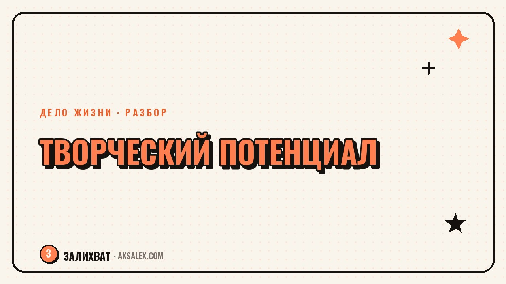

Как раскрыть свой творческий потенциал

Фраза «у меня нет творческого потенциала» почти всегда означает другое: ты давно не пробовала делать что-то без цели сразу получить идеальный результат. Творческий потенциал не талант, который либо есть, либо нет - это навык, который атрофируется без практики, как любой другой. Разберём, как раскрыть его заново через конкретные упражнения и вопросы к себе, без обещаний лёгкого вдохновения.
Почему кажется, что творческого потенциала нет
Чаще всего ощущение «я не творческий человек» появляется из сравнения себя с результатом, который другие показывают после многих лет практики. Ты видишь готовую картину, текст или проект и сравниваешь со своим первым неумелым черновиком - сравнение заведомо нечестное, но мозг делает его автоматически.
Второй источник - школьная привычка оценивать творчество через правильно и неправильно. Если в детстве рисунок критиковали за то, что трава не зелёная, а небо не голубое, формируется страх ошибки в любом творческом действии, и проще вообще не начинать, чем снова получить критику.
Что на самом деле значит быть творческим человеком
- Способность замечать нестандартные связи между привычными вещами
- Готовность делать черновик, зная, что он будет неидеальным
- Любопытство пробовать новый способ, даже если старый уже работает
- Терпимость к периоду, когда результат ещё не нравится самому автору
Упражнения, которые возвращают привычку творить
Творческий потенциал раскрывается не через ожидание вдохновения, а через регулярную практику маленьких действий. Хорошо работает правило: 10-15 минут в день на что-то без цели показать результат кому-то - просто для себя, без оценки качества.
Один из самых простых форматов - список из 20 идей на случайную тему без фильтра, сколько бы глупых вариантов там не оказалось. Мозг привыкает выдавать идеи потоком, а не ждать одну идеальную, и это снимает давление найти сразу правильный ответ.
Три упражнения на неделю
- Каждый день записывай одну нестандартную идею, даже если она кажется странной
- Раз в неделю делай что-то руками без результата на выход - рисунок, коллаж, черновик текста
- Попробуй решить привычную задачу непривычным способом, хотя бы один раз
Творческий потенциал не ждёт вдохновения, он рождается из количества попыток. Чем больше черновиков, тем выше шанс на удачный результат.
Вопросы к себе, которые помогают найти направление
Раскрыть потенциал проще, когда понятно, в какую сторону его направить. Для этого полезно вспомнить занятия из детства или юности, которые приносили удовольствие сами по себе, без оценки взрослых - рисование, конструирование, рассказывание историй, музыка.
Ещё один рабочий вопрос - что ты делаешь, когда никто не видит и не оценивает результат. Часто там прячется настоящий интерес, который взрослая жизнь с её обязанностями задвинула на задний план, но который легко вернуть, выделив на него хотя бы немного регулярного времени.
Вопросы для самостоятельной работы
- Что ты делала в детстве часами, забывая о времени
- В какой момент тебе хочется сказать «а что если сделать по-другому»
- Что ты делаешь для удовольствия, даже когда результат никому не нужен
Какие форматы практики выбрать: сравнение
Разные форматы практики подходят для разных целей - кому-то важно снять блок через свободное творчество, кому-то нужна структура и конкретная задача.
| Формат | Для чего подходит | Сколько времени |
|---|---|---|
| Свободное письмо без цели | снять страх белого листа | 10-15 минут в день |
| Список из 20 идей | научиться генерировать варианты без фильтра | 15-20 минут |
| Творческий кружок или курс | структура и обратная связь от других | 1-2 часа в неделю |
| Совместный проект с другим человеком | ответственность и новый взгляд на идеи | гибко, по договорённости |
Когда творческий потенциал начинает приносить пользу
Раскрытый творческий потенциал не обязан сразу превращаться в профессию или источник дохода - это отдельный и более долгий путь. На первом этапе достаточно вернуть себе способность пробовать и ошибаться без драмы, а дальше уже видно, вырастает ли из этого хобби, подработка или смена дела.
Важно не торопить этот переход и не обесценивать практику, если она пока не приносит денег или признания. Регулярность важнее скорости: через несколько месяцев маленьких попыток разница в уверенности и качестве результата становится заметна даже самому автору.
Частые вопросы
Как понять, в чём мой творческий потенциал?
Вспомни, что приносило удовольствие в детстве без оценки взрослых, и что ты делаешь для себя, когда никто не видит результат. Это обычно указывает направление точнее, чем попытка логически вычислить «правильную» творческую область.
Можно ли развить творческий потенциал, если его нет от природы?
Творческий потенциал почти всегда не врождённый талант, а навык, который тренируется регулярной практикой. Даже короткие ежедневные упражнения на 10-15 минут за несколько месяцев заметно меняют способность генерировать идеи.
Что делать, если боюсь, что результат будет плохим?
Отдели черновик от финальной версии: первая попытка имеет право быть неидеальной, это нормальный этап любого творческого процесса. Критиковать и улучшать результат можно потом, но не до того, как он вообще появился.
Сколько времени нужно, чтобы раскрыть творческий потенциал?
Заметные изменения в уверенности и качестве идей обычно видны через несколько месяцев регулярной практики, а не после одной попытки. Главное - не частота больших прорывов, а стабильность маленьких действий.
Как раскрыть творческий потенциал, если совсем нет свободного времени?
Достаточно 10-15 минут в день на что-то без цели показать результат - список идей, свободное письмо, набросок. Регулярность важнее длительности, и даже такой короткий формат постепенно возвращает привычку творить.
Раз тема оказалась полезной, вот что почитать следующим. Страх начать своё дело: откуда он берётся и что делать, когда страшно сделать первый шаг.
Читать статью →а не вручную